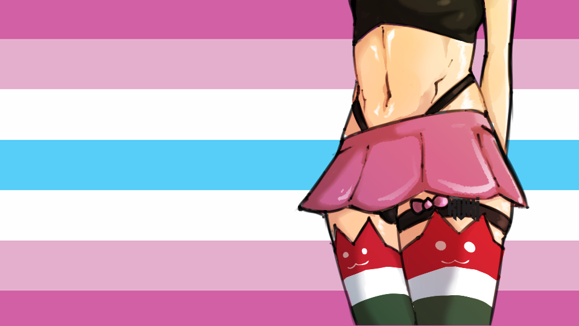

Mi is az a Femboy?
Az interneten egyre többször találkozni a kifejezéssel, de sok a félreértés körülötte. Itt egy barátságos magyarázat: mit jelent, honnan ered, miben különbözik a hasonló fogalmaktól, és miért nem kell senkinek megfelelnie semmilyen elvárásnak ahhoz, hogy közénk tartozzon.

A hivatalos(nak tekintett) femboy büszkeség zászló, melynek színei a nőiességet, a fiúságot és a nemi normák átlépését szimbolizálják.
A fogalom és az eredet
A femboy (a „feminine” és a „boy” szavak összevonásából) olyan embert jelent, aki hagyományosan nőiesnek tartott esztétikát, öltözködést vagy viselkedésmódot választ magának, és ezt fiús, fiúként élt vagy fiúként is értelmezett énjével együtt éli meg. Ez egy önmeghatározó címke: azt jelenti, amit az illető ért alatta, és nincs hozzá belépési teszt vagy kötelező ruhatár.
Honnan ered? A kultúra gyökerei erősen kapcsolódnak a 2000-es és 2010-es évek internetes közösségeihez, különösen az anime és manga rajongókhoz. Korábban a (ma már sokak által sértőnek tartott) „trap” kifejezést használták az animékben megjelenő nőies fiúkra. Az idők során az internetes ifjúsági kultúra, a Reddit, a TikTok és a gaming közösségek (gondoljunk csak a „programmer socks” mémre) hatására a kifejezés átalakult egy sokkal pozitívabb, modern, öndefiniáló szubkultúrává.
Ki lehet femboy? Bárki, akinek jól esik 💖
A femboy nem egy szűk, zárt kör. Lehet cisz fiú, transz fiú, nem bináris ember, kérdőjelező, vagy bárki, aki szívesen játszik a nemi szerepekkel, és ezt a szót érzi a magáénak. Aki nem érzi magáénak a szót, az is teljesen rendben van: a közösségben a támogatók, a kíváncsiak és a barátok is ugyanúgy otthon vannak.
- Nincs elvárt testalkat, hang, ruhaméret vagy „elég nőies vagy-e” teszt.
- Lehetsz csak néha femboy, vagy egy idő után mást érezhetsz, és az is rendben van.
- Senki nem dönti el helyetted, hogy „valódi” femboy vagy-e. A címke a tiéd.
Miben más, mint a hasonló fogalmak?
Ezek nem egymás ellentétei: a kategóriák átfedhetnek, és sokan többel is azonosulnak. A cél nem a határok húzása, csak a félreértések tisztázása.
Crossdressing
A crossdressing (átöltözés) egy tágabb és régebbi fogalom: aki a másik nem ruháit hordja. Van átfedés, de a femboy ennél specifikusabb, modern, internet-szülte esztétika és szubkultúra (szoknyák, combfixek, pasztell színek), ami túlmutat a ruházaton, és egy egész stílust ölel fel.
Sissy
A sissy kifejezés leginkább egy külön, felnőtt közegben használt fogalom, amit sokan sértőnek is éreznek. Aki a saját közegében használja, azt nem ítéljük el, de ez egy másik világ. A femboy létnek nincs kötelező szexuális töltete: ez egy ártatlan önkifejezési és öltözködési forma.
Tomboy: a tükörkép
A tomboy (magyarosan „fiús lány”) a femboy párja. Míg a tomboy a társadalom által fiúsnak tartott ruhákat és viselkedést választja, a femboy a nőiesnek tartott vonalakat. Mindkettő a nemi sztereotípiák szabadabb kezeléséről szól, és sok ember mindkettőt kipróbálja.
Transzneműség és nem binaritás
A nemi identitás (ki vagy) és a nemi kifejezés (hogyan mutatod) két külön dolog, de találkozhatnak. A transznemű nők nők, a transznemű férfiak férfiak, a nem bináris emberek pedig egyik dobozba sem férnek bele, és a femboy bármelyikük stílusa lehet. Sokan femboyként kezdik, és közben jönnek rá a saját identitásukra, mások végig femboyok maradnak. Mindkét út érvényes.
Nem szexuális orientáció!
Hatalmas tévhit, hogy a ruha határozza meg, kit szeretsz. A femboy egy stílus és önkifejezés, nem pedig szexuális beállítottság. Egy femboy lehet heteroszexuális, meleg, biszexuális, aszexuális, vagy bármi más. Ahogy az öltöny nem tesz valakit automatikusan heteróvá, úgy a szoknya sem határozza meg, kibe leszel szerelmes.
Maradt kérdésed? 🎀
Nézz be a GYIK-ba, vagy gyere el hozzánk a Discordra. Itt senkitől nem várjuk el, hogy mindent tudjon, és szívesen válaszolunk.
Csatlakozás a Discordra 🚀